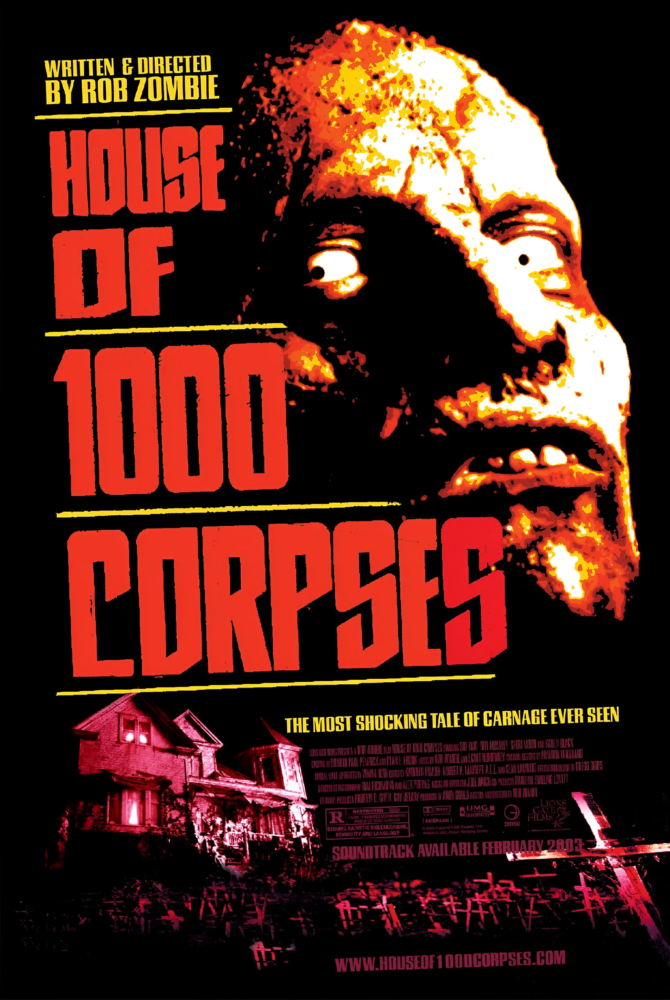

House of 1000 Corpses

House of 1000 Corpses is a 2003 horror film about a group of teenagers who fall victim to a sadistic, murderous family while exploring backroads in Texas.
House of 1000 Corpses is a 2003 horror film about a group of teenagers who fall victim to a sadistic, murderous family while exploring backroads in Texas.
House of 1000 Corpses is a 2003 American black comedy horror film written, co-scored, and directed by Rob Zombie in his directorial debut, and the first film in the Firefly film series. It stars Sid Haig, Bill Moseley, Sheri Moon, Karen Black, Rainn Wilson, Chris Hardwick, Tom Towles, Erin Daniels, Jennifer Jostyn, Walton Goggins, and Dennis Fimple in his final role. The plot centers on a group of teenagers who are kidnapped and tortured by a psychopathic family during Halloween after traveling across the country to write a book.
